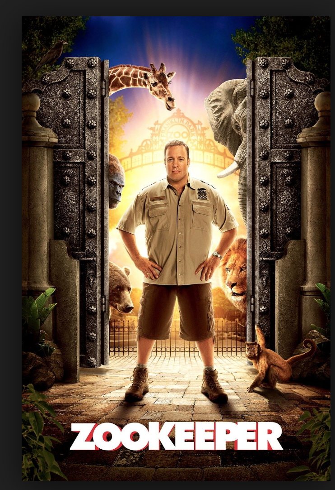
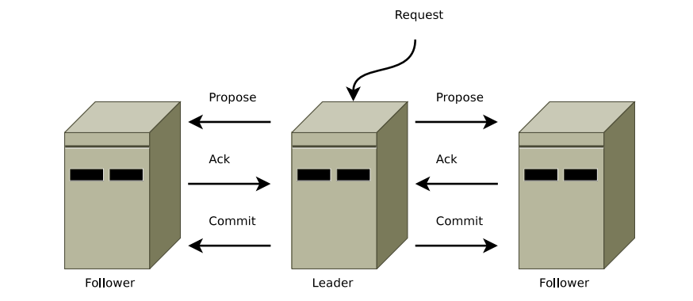

High Throughput, Low Latency, Distributed Commit Log
Messaging System with { Brokers, Topics, Publishers, Subscribers }
Typical Install
Having: 10 Brokers, 700 M Publishes from 100 Publishers, 50 Subscribers
Used for: Clickstream, Synching multiple sub-systems, Application logs...
Data size: 2+ TB
Best of Pub-Sub and Queuing
Strength and Weakness of Queuing and Pub-Sub As in queuing: consumer group feature allows to divide up processing over a collection of processes : members of the consumer group
As in pub-sub: Kafka broadcasts messages to multiple consumer groups
Parallel consumption to Scale Processing: with the Partitions
Zookeeper provides the consistent view of the system:
keeps track of status of the Kafka cluster nodes and it also keeps track of Kafka topics, partitions etc.

Centralized service used to maintain naming and configuration data
Provides flexible and robust synchronization within distributed systems
Allows multiple clients to perform simultaneous reads and writes and acts as a shared configuration service within the system
Provides the consistent view of the system:
keeps track of status of the Kafka cluster nodes and it also keeps track of Kafka topics, partitions etc.
Controller Role
Function of the controller
The controller is one of the most important brokering entity in a Kafka ecosystem responsible:
to maintain the leader-follower relationship across all the partitions.
Every cluster has one leader node and the rest of the nodes are followers.

Paper on ZAB
All incoming client requests and state changes are received at first by the leader with
responsibility to replicate it across all its followers (and itself).
All incoming read requests are also load balanced by the leader within itself and its followers.
ZAB: Zookeeper Atomic Broadcast Protocol Papers
Upon leader crashes, nodes execute a recovery protocol to agree upon a common consistent state before resuming regular operation
and to establish a new leader to broadcast state changes
A simple totally ordered broadcast protocol


 Centralized service used to maintain naming and configuration data
Centralized service used to maintain naming and configuration data